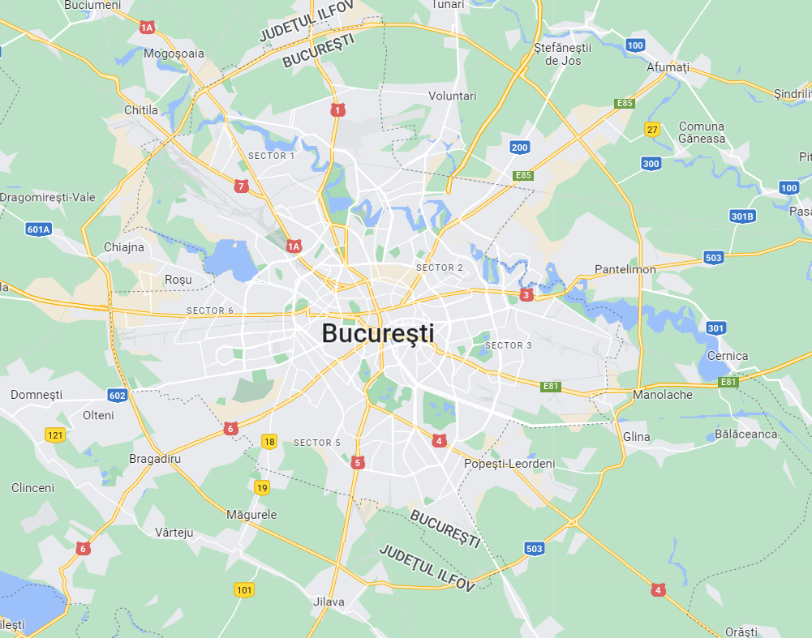

Utilizarea grafurilor în rezolvarea problemelor cotidiene
Cel mai bun exemplu de aplicație practică în viața reală a grafurilor neorientate sunt hărțile rutiere. Putem afla astfel cel mai scurt drum până într-un anumit
punct sau care puncte de pe hartă sunt cel mai ușor accesibile. Nodurile pot fi considerate orașe, iar muchiile drumuri; grafurile orientate pot reprezenta drumuri cu sens unic între clădiri.
De asemenea, putem reprezenta traiectoria unei călătorii cu ajutorul unui lanț al unui graf neorientat.
Grafurile mai pot arăta legăturile dintre anuminte grupuri sau oameni; grafurile orientate pot arăta transferul de informații sau a unor bunuri. Un arbore genealogic este, de asemenea, un graf neorientat.
Cablurile de înaltă tensiune care pornesc dintr-o centrala pot fi și ele reprezentate cu ușurință cu ajutorul unui graf orientat, indicând și direcția de deplasare a curentului. În acest caz centrala este un
nod sursă. La fel se poate reprezenta și un sistem de canalizare, de încălzire sau rețeaua de apă curentă.
Multitudinea căilor aeriene reprezintă grafuri. Nodurile sunt intersecțiile (imaginare) și muchiile sunt rutele (imaginare). Noduri pot fi și aeroporturile.
Teoria grafurilor are numeroase apeluri în chimie, contribuind în mare măsură la rezolvarea problemelor de numărare a grafurilor aparținând unor clase speciale. Teoria grafurilor este folosită în domenii
variate: de la chimie la economie, de la studiul rețelelor electrice la critica textelor de politică, devenind o disciplină majoră.
